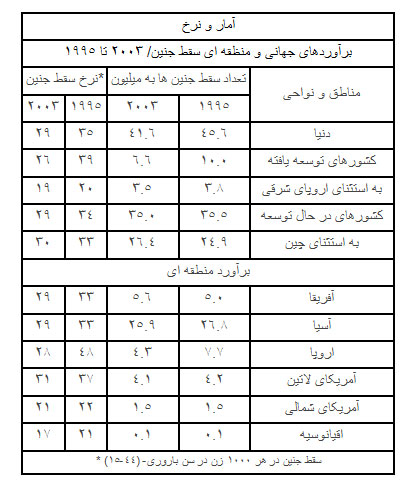
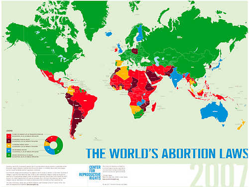

پذيرش > سایت نوشته ها > حقایقی در مورد سقط جنین در دنیای امروز /ترجمه و تدوین: نیکزاد زنگنه


 حقایقی در مورد سقط جنین در دنیای امروز /ترجمه و تدوین: نیکزاد زنگنه حقایقی در مورد سقط جنین در دنیای امروز /ترجمه و تدوین: نیکزاد زنگنه
7 خرداد 1390 - - نسخه قابل چاپ
نگاهی به روند جاری جهانی سقط جنین
 نرخ سقط جنین از سال 1995 تا 2003 از 46 میلیون به 42 میلیون مورد کاهش یافته است. یعنی یک مورد از هر 5 بارداری در سراسر جهان با سقط جنین پایان می یابد. نرخ سقط جنین از سال 1995 تا 2003 از 46 میلیون به 42 میلیون مورد کاهش یافته است. یعنی یک مورد از هر 5 بارداری در سراسر جهان با سقط جنین پایان می یابد.
در سال 2003، در ازای هر 1000 زن در سنین باروری (44-15 سال)، 29 زن سقط جنین انجام داده اند. این آمار در سال 1995، 35 مورد بوده است.
میزان کاهش در نرخ سقط جنین در کشورهای توسعه یافته - جایی که عمل سقط قانونی و بهداشتی انجام می شود- بیشتر است ( از 39 به 26 مورد در هر 1000 زن در سن باروری). در مقایسه با کشورهای در حال توسعه که بیش از نیمی از سقط جنین ها در آن غیرقانونی و غیربهداشتی انجام می شود ( از 34 به 29 مورد در هر 1000 زن در سن باروری).
اکثر سقط جنین ها در کشورهای در حال توسعه انجام می شود (سالانه 35 میلیون مورد در مقایسه با 7 میلیون مورد در کشورهای توسعه یافته).
نگاهی به روند جاری منطقه ای سقط جنین
چشمگیرترین میزان کاهش در نرخ سقط جنین در اروپای شرقی – جایی که سقط جنین در اکثر بخش های آن قانونی و بهداشتی صورت می گیرد- روی داده است. میزان کاهش از 90 مورد به 44 مورد است که همزمان با افزایش استفاده از روش های جلوگیری از بارداری در منطقه رخ داده است.

گرچه نرخ و نسبت سقط جنین (یعنی میزان سقط جنین در هر 100مورد تولد) در اروپای غربی به طور چشمگیری در سال های اخیر کاهش یافته اما همچنان در مقایسه با سایر مناطق آمار بالایی دارد. در سال 2003 میزان سقط جنین های انجام شده در این منطقه از میزان تولدها بیشتر است. (105 سقط جنین در مقابل هر 100 تولد)
تعداد برآورد شده سقط جنین در آفریقا از سال 1995 افزایش یافته است. با این حال نرخ سقط جنین منطقه ای به دلیل افزایش تعداد زنان در سن باروری، کاهش یافته است.
نرخ سقط جنین در آسیا و آمریکای لاتین از سال 1995 کاهش متوسطی داشته است. پایین ترین نرخ سقط جنین در سراسر دنیا در اروپای غربی است (12 مورد از هر 1000 زن در سن باروری). این نرخ در اروپای شمالی 17 مورد و در آمریکای شمالی و کانادا 21 مورد است.
به دلیل تمرکز جمعیت جهان در آسیا، بیشترین میزان سقط جنین در این قاره صورت می گیرد. این نرخ سالانه 25 میلیون مورد است که 9 میلیون مورد از آن در چین انجام می شود.
سقط جنین غیربهداشتی و مخاطره آمیز
سازمان بهداشت جهانی سقط جنین غیربهداشتی را به این صورت تعریف می کند: "روشی برای پایان دادن به بارداری ناخواسته که توسط افراد فاقد مهارت یا در محیط بدون رعایت استاندارهای پزشکی یا هردو صورت می گیرد".
48% کلیه سقط جنین ها در سراسر جهان غیربهداشتی است. تقریبا همه سقط جنین ها (بیش از 92%) در مناطق توسعه یافته، بهداشتی صورت می گیرد در حالیکه بیش از نیمی از سقط جنین ها (55%) در کشورهای در حال توسعه به صورت کاملا غیربهداشتی انجام می شود.
برآوردهای جدید سازمان بهداشت جهانی
21.6 میلیون سقط جنین غیربهداشتی در سال 2008 انجام شده است. بالاترین نرخ (36 مورد از هر 1000 زن) متعلق به آفریقای مرکزی و شرقی است.
بین 2003 تا 2008 نرخ جهانی سقط جنین غیربهداشتی (14 مورد در هر 1000 زن در سن باروری) ثابت بوده است.
95% سقط جنین ها در آفریقا و آمریکای لاتین و 60% در آسیا (به استثنای شرق آسیا) در شرایط غیربهداشتی انجام شده است.
نرخ جهانی سقط جنین غیربهداشتی بین 1995 (15 مورد در هر 1000 زن در سن باروری) تا 2003 (14 مورد در هر 1000 زن در سن باروری) نیز در اصل بدون تغییر بوده است. از آنجا که در طول این مدت سقط جنین به طور کلی کاهش یافته است، نسبت سقط جنین های غیربهداشتی از 44% به 47% افزایش یافته است.
پیامدهای سقط جنین غیربهداشتی
سالانه 5 میلیون زن در سراسر جهان به دلیل عوارض مربوط به سقط جنین مانند خونریزی و عفونت در بیمارستان بستری می شوند.
عوارض ناشی از روش های سقط جنین غیربهداشتی سالانه 13% (47.000 مورد) نرخ مرگ و میر مادران در دنیا را شامل می شود.
تقریبا تمام مرگ های ناشی از سقط جنین در کشورهای درحال توسعه اتفاق می افتد. بالاترین تعداد متعلق به آفریقا است.
پیامدهای دیگر سقط جنین غیربهداشتی از دست دادن بهره وری و تحمیل فشار اقتصادی به نظام بهداشت عمومی، مشکلات دراز مدت روحی و جسمی مانند ناباروری است.
بارداری های ناخواسته: ریشه سقط جنین
از 208 میلیون مورد بارداری در سراسر جهان در سال 2008، 33 میلیون مورد (16%) به تولد ناخواسته و 41 میلیون مورد (20%) به سقط جنین منجر شده است.
از 23 میلیون بارداری که در کشورهای توسعه یافته بیش از 40% ناخواسته بوده که 28% آنها به سقط جنین ختم شده است.
از 185 میلیون بارداری در کشورهای در حال توسعه، 40% ناخواسته بوده که 19% آنها به سقط جنین ختم شده است.
زنان اگر مایل هستند تنها دو فرزند داشته باشند، باید حداقل 20 سال از وسایل موثر جلوگیری از بارداری استفاده کنند. اگر تعداد مطلوب فرزندان 4 باشد، این زمان به 16 سال کاهش می یابد.
بر اساس گزارش سال 2009، 215 میلیون از زنان کشورهای در حال توسعه به وسایل مدرن جلوگیری از بارداری دسترسی ندارند و همچنان از روش های سنتی استفاده می کنند یا جلوگیری انجام نمی دهند.
82% از بارداری های ناخواسته در کشورهای در حال توسعه، برای زنانی رخ می دهد که به وسایل مدرن جلوگیری از بارداری دسترسی ندارند. این آمار برای زنانی که به روش های مدرن جلوگیری از بارداری متوسل می شوند، 18% است.
مهمترین دلیل عدم استفاده زنان (مجرد یا متاهل) از روش های مدرن جلوگیری از بارداری، وجود نگرانی در مورد پیامدها و عوارض جانبی این روش ها یا این تفکر است که آنها در معرض حاملگی نیستند.
قوانین سقط جنین
محدودیت های قانونی اعمال شده در زمینه سقط جنین در میزان انجام آن تاثیری نمی گذارد. برای مثال نرخ سقط جنین در آفریقا – جایی که سقط در بسیاری از شرایط و اکثر کشورها غیرقانونی است - 29 مورد است و در اروپا که سقط جنین به طور گسترده مجاز است، 28 مورد است. پایین ترین نرخ در دنیا در اروپای شمالی و غربی است جایی که سقط جنین با کمترین محدودیت ها در دسترس است.
زمانی که سقط جنین به صورت گسترده مجاز و قانونی باشد، معمولا بهداشتی صورت می گیرد درحالیکه در صورت غیرقانونی بودن سقط جنین در اکثر شرایط، سقط ها غیربهداشتی و مخاطره آمیز هستند. برای مثال عفونت ناشی از سقط جنین با تصویب قانون آزادی سقط جنین در سال 1996، 52% کاهش یافته است.
از سال 1997 شرایطی که سقط جنین می توانست به صورت قانونی در آن اعمال شود در 17 کشور گسترش یافت: بنین، بوتان، کامبوج، چاد، کلمبیا، اتیوپی، گینه، ایران، مالی، نپال، نیجریه، پرتغال، سنت لوسیا، سوازیلند، سوییس، تایلند و توگو. یک قلمرو و سه ایالت در استرالیا (قلمرو پایتخت و ایالت های ویکتوریا، تاسمانی و استرالیای غربی) و یک ایالت در مکزیک (منطقه فدرال مکزیک) سقط جنین را قانونی اعلام کردند. در مقابل السالوادور و نیکاراگوئه قوانین خود را از محدودیت های نسبی به ممنوعیت کامل سقط جنین تغییر دادند. این در حالی که لهستان سقط جنین را به دلایل اقتصادی و اجتماعی کاملا مجاز می داند.
در سراسر جهان، سقط جنین دارویی با پذیرش بسیار بالایی روبرو است. حداقل 39 کشور داروی "mifepristone" را ثبت کرده اند که 35 مورد آن در 10 سال گذشته بوده است.
قوانین سقط جنین به روایت نقشه
تقریبا 25% جمعیت جهان در کشورهای زندگی می کنند که قوانین سختگیرانه ای در مورد سقط جنین دارند. این کشورها عمدتا در آمریکای لاتین، آسیا و آفریقا واقع شدند. در بعضی از کشورها مانند شیلی زنان هنوز به دلیل انجام سقط جنین غیرقانونی به زندان می روند.
قانونی کردن سقط جنین می تواند از مرگ های غیرضروری و دردناک زنان پیشگیری کند. قوانین محدود کننده سقط جنین بر طبق توافق نامه های ثبت شده در کنفرانس جمعیت و توسعه سازمان ملل متحد در قاهره، چهارمین کنفرانس جهانی زنان در پکن و اعلامیه جهانی حقوق بشر، ناقض حقوق زنان است. (ماده 1، 3، 12، 19 و 27.1) پیش از آغاز قرن 19 هیچ قانونی در زمینه سقط جنین وجود نداشت. در سال 1869 پاپ پیوس نهم اعلام کرد که روح در از زمان نطفگی حلول می کند پس هیچ بارداری مجاز نیست به سقط ختم شود. این قانون پایه بسیاری از قوانین سختگیرانه کنونی سقط جنین در بسیاری از کشورهای در حال توسعه است. بین سال های 1085-1950 بیشتر کشورها به دلیل رعایت حقوق بشر و حفظ امنیت و سلامت انسان ها سقط جنین را مجاز اعلام کردند. غیرقانونی ماندن سقط جنین در برخی مناطق بر مبنای قوانین استعماری قدیمی و نه بر اساس دیدگاه ها و نظرات مردم محلی است.

نقشه خوانی:
قرمز: سقط جنین یا کاملا غیرقانونی است و یا تنها در شرایط حفظ سلامت زن مجاز است.
صورتی: سقط جنین تنها برای نجات جان زن یا حفظ سلامت جسمی وی مجاز است.
زرد: سقط جنین به دلیل حفظ سلامت روانی زن مجاز است.
آبی: سقط جنین از نظر قانونی با توجه به دلایل اقتصادی- اجتماعی مجاز است.
سفید: سقط جنین در صورت تمایل به پایان دادن به بارداری مجاز است.
کشورهای قرمز روی نقشه:
آمریکای جنوبی: برزیل، کلمبیا، شیلی، جمهوری دومنیکن، ال سالوادور، گواتمالا، هاییتی، هندوراس، پاراگوئه، نیکاراگوئه، پاناما، مکزیک، ونزوئلا
جنوب صحرای آفریقا: آنگولا، بنین، چاد، کنگو، ساحل عاج، گابون، گینه بیسائو، کنیا، لسوتو، ماداگاسکار، مالی، موریتانی، موریتس، نیجر، نیجریه، سنگال، سومالی، تانزانیا، توگو، اوگاندا
خاورمیانه و شمال آفریقا: افغانستان، ایران، مصر، لبنان، لیبی، عمان، سودان، سوریه، امارات، یمن
آسیا و اقیانوس آرام: بنگلادش، اندونزی، لائوس، میانمار، فیلیپین، سریلانکا، گینه نو پاپوآ
اروپا: ایرلند، مالت
کشورهای صورتی روی نقشه:
آمریکا و کارائیب: آرژانتین، بولیوی، کاستاریکا، اکوادور، پرو، اروگوئه
جنوب صحرای آفریقا: بورکینافاسو، بروندی، کامرون، اریتره، اتیوپی، گینه، مالاوی، موزامبیک، زیمباوه
خاورمیانه و شمال آفریقا: کویت، مراکش، عربستان سعودی
آسیا و اقیانوس آرام: پاکستان، کره جنوبی، تایلند
اروپا: لهستان
منابع:
www.guttmacher.org
www.womenonwaves.org
تا قانون خانواده برابر
ارسال به
بالاترین
،
توییتر
،
فریندفید
،
فیسبوک
در همين بخش :
 یک خبر تلخ؟ یک قانونشکنی؟ یک تصمیم بخشنامهای جدید؟ یک خبر تلخ؟ یک قانونشکنی؟ یک تصمیم بخشنامهای جدید؟
چرا بایست به سکسوالیته پرداخت؟ / نفیسه آزاد
آزارجنسی خانگی؛ «قربانی» نه، «نجات یافته»
زنان، بزرگترین بازندگان بهار عرب
سانسور از دیدگاه جنسیتی/الهه امانی
ديگر بخش ها :
طرح یک میلیون امضا
|
مقالات
|
سایت نوشته ها
|
اخبار
|
گزارش كمپين
|
گفت و گو
|
علیه سکوت
|
كوچه به كوچه
|
نامه های شما
|
گزارش ویژه
|
گفتگو با اعضا
|
ویژه سالگرد کمپین
|
تصویر برابری
|
دل آرام علی
|
تریبون
|
مقالات
|
تاریخ شفاهی
|
خارج از چارچوب
|
کتابخانه
|
درباره کمپین
|
کمپین در شهرها
|
کمپین در بند
|
صدای تغییر
|
ویژه 22 خرداد
|
لایحه حمایت از خانواده
|
گالری
|
عشا مومنی
|
امیر یعقوبعلی
|
خدیجه مقدم
|
راحله عسگری زاده و نسیم خسروی
|
پروین اردلان،جلوه جواهری، مریم حسین خواه، ناهید کشاورز
|
زینب پیغمبرزاده
|
سعیده امین، سارا ایمانیان، محبوبه حسین زاده، ناهید کشاورز و همایون نامی
|
احترام شادفر
|
نسیم سرابندی زاده،فاطمه دهدشتی
|
وبلاگ مهمان
|
پرونده خرم آباد
|
دستگیری ها
|
مریم مالک
|
پرستو اللهیاری
|
مهرنوش اعتمادی
|
سمیه رشیدی
|
Other Languages
|
همراهان
|
«فراخوان کمپین ده روز با بهاره هدایت»
| English
|